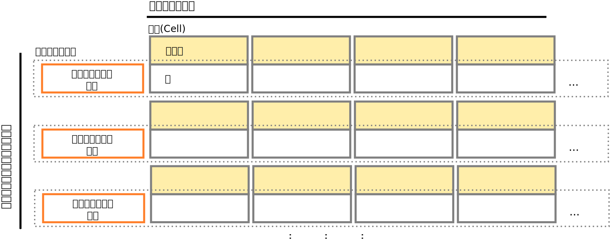

Javaではじめる
Apache Cassandra
森下 雄貴
Apache Cassandra コミッター / Software Developer @ DataStax
森下 雄貴
@yukim
2012年5月よりApache Cassandraコミッター。
テキサス州オースティン在住
前職では東京のSIerでITアーキテクト的な仕事をしていました。
Apache Cassandraは誕生から5年
Apache Cassandraの利用事例
- データ量の増加への対応
(e.g. CERN hadron collider, Barracuda Networks) - 時系列データの超高速書き込み
(e.g. BlueMountain Capital – フィナンシャルデータの分析) - アベイラビリティ
(e.g. eBay, Eventbrite, Netflix, GoDaddy, Sony Entertainment Network)
Apache Cassandraの特徴
- スケーラビリティ
- ハイパフォーマンス
- アベイラビリティ - "Always On"
- + 開発のしやすさ
Apache Cassandra クラスタ
- P2Pの分散システム
- パーティションキーに基づいてデータを分散保持
- マスターレス(単一障害点なし)。すべてのノードが同じ役割
- データは複数のノードに保持(レプリケーション)
- 柔軟なレプリケーション戦略
マルチデータセンター対応
リニアスケーラビリティ
http://vldb.org/pvldb/vol5/p1724_tilmannrabl_vldb2012.pdf
データの書き込み
データの読み出し
ストレージモデル
- BigTableのColumnFamilyがベース
- 時系列データと相性がよい

+ 開発のしやすさ
CQL3
Thrift RPC API
- 元々Cassandraが提供しているデータアクセス方法
- ストレージエンジンを直接さわるイメージ
Column col = new Column(ByteBuffer.wrap("name".getBytes()));
col.setValue(ByteBuffer.wrap("value".getBytes()));
col.setTimestamp(System.currentTimeMillis());
ColumnOrSuperColumn cosc = new ColumnOrSuperColumn();
cosc.setColumn(col);
Mutation mutation = new Mutation();
mutation.setColumn_or_supercolumn(cosc);
List<Mutation> mutations = new ArrayList<>();
mutations.add(mutation);
Map<String, List<Mutation>> cf = new HashMap<>();
cf.put("Standard1", mutations);
Map<ByteBuffer, Map<String, List<Mutation>>> records = new HashMap<>();
records.put(ByteBuffer.wrap("key".getBytes()), cf);
client.batch_mutate(records, consistencyLevel);
CQL3
Cassandra Query Language ver. 3
CREATE KEYSPACE test_app WITH replication = {
'class': 'SimpleStrategy',
'replication_factor': 1
};
USE test_app;
CREATE TABLE user (
id uuid PRIMARY KEY,
name text,
dept text
);
INSERT INTO user (id, name, dept) VALUES (410d0c8c-83d3-11e3-9d04-d1187852b5df, 'Yuki Morishita', 'Engineering');
SELECT * FROM user WHERE id = 410d0c8c-83d3-11e3-9d04-d1187852b5df;
SQLにそっくり
CQL3
インデックスを作ったり
CREATE INDEX dept_idx ON user (dept);
SELECT * FROM user WHERE dept = 'Engineering';
CREATE USER や GRANT/REVOKE もできます
CREATE USER yukim WITH PASSWORD 'et3Em09s';
GRANT SELECT ON test_app.user TO yukim;
LIST USERS;
* cassandra.yamlでPasswordAuthorizer/CassadnraAuthenticatorを設定
CQL3
SQLに似てはいるものの
JOIN- 副問い合わせ
- 集計関数
はありません
CQL3
CQL3はCassandraストレージエンジンの上に作られています。
CQL3をさわってみる
Apache Cassandra標準のCQLツール cqlsh
$ bin/cqlsh cass1
Connected to Test Cluster at cass1:9160.
[cqlsh 4.1.0 | Cassandra 2.0.4 | CQL spec 3.1.1 | Thrift protocol 19.39.0]
Use HELP for help.
cqlsh> USE test_app;
cqlsh:test_app> SELECT * FROM user WHERE id = 410d0c8c-83d3-11e3-9d04-d1187852b5df;
id | dept | name
--------------------------------------+-------------+----------------
410d0c8c-83d3-11e3-9d04-d1187852b5df | Engineering | Yuki Morishita
(1 rows)
CQL3を使ったデータモデリング
例: 音楽アプリ
- ユーザーはアルバムの情報を作成/編集できる

アルバム情報
CREATE TABLE album (
album_id uuid PRIMARY KEY,
album_title text,
artist text,
release_year int,
cover_image_url ascii
);
UUID: 分散システムで一意に情報を識別するID
アルバムへのタグ付け
ALTER TABLE album ADD tags set<text>;
UPDATE album SET tags = tags + {'alternative', 'instrumental'} WHERE album_id = ...;
Collections
CQL3には3つのコレクション型があります
-- Set
UPDATE album SET tags = tags + {‘classical’} WHERE ...
UPDATE album SET tags = tags - {‘blues’} WHERE ...
-- List
UPDATE list_example SET points = points + [20, 30] WHERE ...
UPDATE list_example SET points = points - [100] WHERE ...
-- Map
UPDATE map_example SET attributes[‘ghi’] = ‘jkl’ WHERE ...
DELETE attributes[‘abc’] FROM map_example WHERE ...
注意点
- 現状、すべてのコレクションを一括でシリアライズ
- CQL3では個別の要素にアクセスできない
Javaアプリからのアクセス
Cassandraドライバーの選択
従来からCassanraはThrift APIをラップしたライブラリが複数開発された(Hector, Astynaxなど) RPCを特徴とするThrift APIの限界から、CQL3のバイナリプロトコルが開発される(Cassandra 1.2)
- 非同期通信のサポート
- サーバープッシュ
- ページング
- その他新機能を追加しやすい
DataStax Java driver
- Apache2ライセンスのオープンソースドライバ
- クライアントからのリクエストを自動でルーティング
- コネクションプーリング
- 自動フェイルオーバー
- JMXによるモニタリング
- プリペアドステートメント
- ノンブロッキングAPI
DataStax Java driver
- https://github.com/datastax/java-driver
- Maven:
<dependency> <groupId>com.datastax.cassandra</groupId> <artifactId>cassandra-driver-core</artifactId> <version>2.0.1</version> </dependency>
クラスタへ接続する
public void connect(String... nodes)
// 最初に接続するアドレスを(複数)指定して接続
cluster = Cluster.builder()
.addContactPoints(nodes)
.build();
// クラスタのメタ情報を取得
Metadata metadata = cluster.getMetadata();
System.out.printf("Connected to cluster: %s\n", metadata.getClusterName());
for (Host host : metadata.getAllHosts()) {
System.out.printf("Datacenter: %s; Host: %s; Rack: %s\n",
host.getDatacenter(), host.getAddress(), host.getRack());
}
}
public void close() {
// クラスタへの接続をすべてシャットダウン
cluster.shutdown();
}
CQLの実行
Sessionオブジェクトを取得してCQLを実行
Session session = cluster.connect("my_keyspace");
// INSERT文の実行
session.execute("INSERT INTO my_table (id, name) VALUES (" +
"756716f7-2e54-4715-9f00-91dcbea6cf50," +
"'Yuki Morishita'" +
");");
// プリペアドステートメントバージョン
PreparedStatement statement = session.prepare("INSERT INTO my_table (id, name) VALUES (?,?);");
BoundStatement boundStmt = new BoundStatement(statement);
session.execute(boundStmt.bind(UUID.fromString("756716f7-2e54-4715-9f00-91dcbea6cf50"),
"Yuki Morishita"));
QueryBuilder
CQL文を直接書くのではなく、プログラムで組み立て
// INSERT
Insert insert = QueryBuilder.insertInto("my_table")
.value("id", UUID.fromString("756716f7-2e54-4715-9f00-91dcbea6cf50"))
.value("name", "Yuki Morishita");
session.execute(insert);
// SELECT
Query query = QueryBuilder.select().all().from(keyspace, table);
ResultSet result = session.execute(query).getAll();
ドキュメント
Questions?
yuki@datastax.com